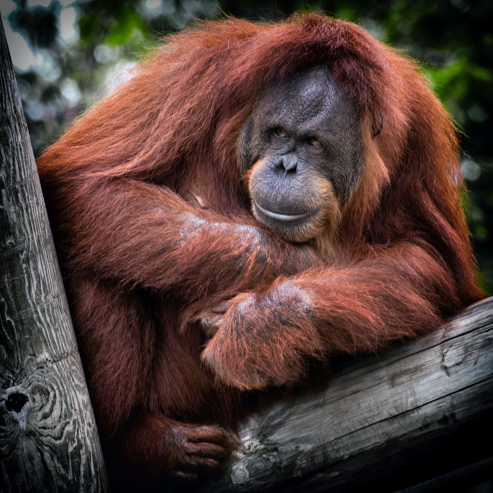
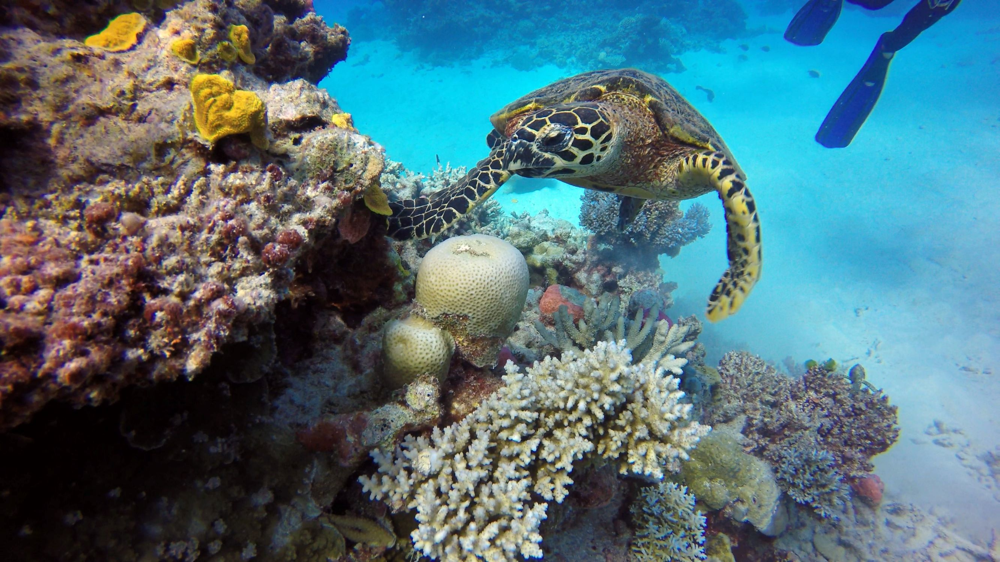

Nature | Biodiversity
Biodiversity
30 April 2021
Reflecting on the state of earth's biodiversity.
Introduction
Last year marked the end of the UN decade of Biodiversity (2011-2020). In September 2020 many nations convened at the 2020 summit to reflect on the proceedings of this project. But, sadly, it seems clear that we can’t call this decade a huge success: the UN itself notes that “The direct causes of biodiversity loss have either grown steadily or accelerated in recent decades". And indeed, the number of living animals has declined by 50% since 1970 .
What is Biodiversity?
The UN believes that for moral, aesthetic, economic, climate and safety reasons, it is most crucial to protect biodiversity. But, I wonder, should we really use political language for biodiversity, or is it best described as ‘life itself’? In any case, this article is here to showcase the need for protecting biodiversity. We’ll go over its definition and consider how important the protection of biodiversity is.
Should we use political language for biodiversity or call it ‘life itself’?
The Orangutan is critically endangered due to attacks on its ecosystem.
The website Global Issues defines biodiversity as “The variety of life on Earth, its biological diversity…". The The National Geographic Encyclopedia adds that biodiversity includes many things, even parasites and funghi that we don’t see with the naked eye. So, they present this more elaborate definition: ‘the variety of all forms of life, from genes to species, through to the broad scale of ecosystems.’ Hopefully that makes it clear what people normally mean by ‘biodiversity’. It is truly the circle of life, from the microbial plankton to the whale and the daisy to the bee.
Is Biodiversity in danger?
Great Barrier Reef
Yes, biodiversity is certainly at risk in many parts of the world. Many parts of the world suffer from overfishing, extinction rates are rapidly accelerating, unique biomes such as the Great Barrier Reef are threatened and many other things weaken earth’s biodiversity.
The Great Barrier Reef in Oceania hosts all sorts of unique species corals and sealife.
If we take the example of the Great Barrier Reef we may realize that a decreased biodiversity is truly a snowball effect: not only the species of coral, but also the unique fish that nest in it and the predators of those fish are all rapidly declining in numbers. That's why the Great Barrier Reef is a great example of the interdepency of species and lifeforms; If one of them is to suffer, the whole system is in decline.
"Some species (like corals) have crucial roles for ecosystems. Without them, it will collapse."
What’s more is that a weakened biodiversity is worse at recovering from extreme wheather or any type of disaster. So, the more we weaken biodiversity, the more we risk irreparable damage to those local systems as a whole. For instance, it will likely take decades to recover the damage that the Great Barrier Reef has suffered the past few years. If we don’t stop the motions of overfishing, deforesting and such harmful acts, we risk getting to that tipping point of local ecosystems. This is what biologists call the ‘Safe Minimum Standard’ (or SMS).
German insects
Another example of local degradation is Germany. Over the past 25 years, 75% of flying insects died. And surely, birds have been declining too: with a steady 15% decrease in 12 years. What we see is that each time we damage nature, it amplifies and bleeds into the entire ecosystem. The decline is so rampid that Germany may, by law, fine people up to 50.000 Euro for killing insects like a wasp.
"Germany has 75% less insects than 25 years ago."
Indonesian overfishing
Whereas Germany seems to tackle its ecological problems, other areas of the world do little to mitigate the damage. 1/3 of all fish caught is unsustainable (meaning that the area is being overfished). But, countries lack any reaction to these staggering numbers. If you consider that areas such as Indonesia suffer from high numbers of self-sustaining locals who illegally fish you may realize it becomes really difficult to return to healthy fish populations. In this example we see yet again that damage to ecosystems is truly something that amplifies, i.e. amalgamates. It may take long to heal those systems once we realize how far we have gone.
Through the above 3 examples we have noticed how biodiversity is quite vulnerable and can suffers the ‘domino-effect’ in different ways. Although we know that it needs breathing time to recover from the damage that we do, we still continue to overfish and deforest our precious – and sometimes unique – biomes.
A Question of Momentum
The sad truth is that people don’t realize that damage to the environment is a question of momentum. As the band muse puts it: the stroke of a butterfly can lead to a hurricane. Let’s be wary of weakening eco systems or killing species to a ‘Safe Minimum Standard’, as the role of coral reef or bees may truly have a crucial role at the very core of their ecosystem: without some of those species the whole system might truly perish, become more homogenous (less varied & abundant) and animals could go extinct.
Muse made a song about the 'butterfly effect', another term for the 'domino effect'
Closing message
Scientists agree that earth’s climate is becoming harsher and more extreme. Weak ecosystems are much worse at recovering from such sudden changes - so we must keep them healthy.
The world’s population is growing, and people want more things and food in their mouths. It is yet another reason of the many why should maintain healthy ecosystems. We need to keep supplying that food and make sure our scarce wild nature and protected natural parks will not become overcrowded. All in all, I think it’s rather clear we should limit our damage to earth’s biodiversity. As much as we enjoy snorkeling in coral reefs or watching birds in silence we should allow our children to do so in the future.
“Let our children enjoy nature too"
List of Sources
Here is a list of sources that were used for this article.